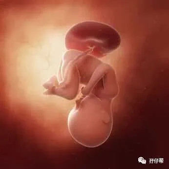

文|圆圈妈，一个文思如尿崩的双胎妈妈
图|来自网络，如有侵权，请联系删除
· 正 · 文 · 来 · 啦 ·
【01】两胎儿的发育情况
孕35周的胎宝宝已经有蒜薹那么长了。从头部到臀部长约47.2cm， 约2472G▼：
孕35周的双胞胎胎儿发育图▼：
【02】我的住院保胎经历
Ⅰ 孕周35W，住院第14天
掐指一算，我已经住院保胎两个星期了，由刚开始的不适应，到现在的麻木不仁....
早晨去护士站称体重，75KG了！
我摸着肚子，感受下那沉甸甸的分量。
里面那两只好样哒！不枉为娘天天胡吃海喝，就是为了孕后期让你们多长几两肉，省得出来花钱遭罪。
发现孕后期的肚子长得特别快，刚入院的时候，我还能麻利地下床，才两周时间，我就只能扶墙上厕所了。
好希望快点解脱，又希望两崽能多待一天是一天。
晚上，圆圈爸说要给我拍照，我才发现，我马上要生了，居然没有拍过几张孕妇照。
不是不想拍，而是这个双胎经历，我希望可以不被记起！
但事实上，哪怕不用照片，我也能如数家珍似的说起孕期那些囧人囧事，而且可以说上七七四十九天。
于是，我让圆圈爸给我拍个背影照，咔嚓...
上衣是一件宽大的T恤，裤子是高中时的校裤，长发披肩的我，从背后看，还有点腰身，说像个学生妹子.也不过分..
这就是我想要的效果！哪怕自欺欺人也好！哈哈！
Ⅱ 孕周35W+1 住院第15天
每次查完房，我就很质疑当初住院待产的决定是不是对的？
病房里每天都有不同的人住进来，隔壁床已经换了好几拨人了，要么去生娃了，要么出院了，只有我一直还在，让我有点哭笑不得。
好歹我也是双胎，属于高危妊娠的级别，但我觉得我是最不受待见那位。
除了常规的每日听胎心，测体温，量血压，做胎监，基本上，我只需要躺在床上吃，喝，睡就行了。
每日查房的医生，基本上到我病床上，说来说去就那几句话，注意胎动饮食，不要便秘，有见红腹痛就通知医生。
可能是我太嘚瑟了，日子过得太滋润了，今天我的智齿发炎了。
不是很痛，但是咬合困难，让人极端烦躁，吃不下饭。
Ⅲ 孕周35W+2 住院第16天
今天病房住进一个刚从抢救室转普通病房的高龄单胎妈妈。
术前重度先兆子痫，术后直接进了ICU，在那里躺了七天七夜，醒来的时候，伤口已经愈合了。
她自嘲地说：“别人术后痛得死去活来，可是自己醒来后伤口都结疤了，丝毫没有痛感！”
听完这段坎坷的历程，再看看当事人一脸轻松的样子，我们都安静了。
该说什么呢？都是待产的女人，都有可能发生在自己身上。
只能祈祷！默默地祈祷！一定要活着出来！
听了她的“生门”故事，我对生命对了更深刻的认识。
我一点都不羡慕她，我宁愿自己承受那千刀万剐般的痛，也不想去ICU，不想让所有亲人好友替我担心，为我伤心落泪...
突然觉得自己很幸福，很感恩身边的人为我做的一切。
非常感激我的公公婆婆和小姑子，每天倒两次地铁来来回回坚持给我送饭菜，只因为我吃不惯外面的饭菜，担心我受委屈。
还有圆圈爸，白天上班，晚上来医院陪护，还要耐着性子安抚一个时而亢奋，时而聒噪，时而焦虑的孕妇。
我该知足了！
至少，我只是在医院空虚寂寞了而已，每天吃好睡好，像只猪仔一样疯狂长肉，多幸福啊！
瞧瞧我的隔壁34床，二胎+疤痕子宫+前置胎盘+血糖高，她随便一个指征都比我高危。
听医生查房时说前置胎盘会大出血，而她属于最凶险的中央型前置胎盘，已经黏连到膀胱了，分分钟危及生命！全深圳市没几个医生敢给她动手术。
更要命的是，她还妊娠糖尿病，每天天不亮就被护士叫醒砸手指，十个手指头已经面目全非了！
我暗自庆幸自己除了双胎有点高危，其他情况都很正常！
同时深深地佩服这位重庆妹子，妥妥的正能量，天天该吃该喝，丝毫不被医生的危言耸听吓倒。
我不敢想象，要是我摊上那些并发症，估计会被吓到早产。
Ⅳ 孕周35W+3 住院第17天
例行查房，主治医生跟我商量剖腹产的日子。
她指着我那薄如纸，因过度膨胀而带点青紫色的肚子，建议36周就终止妊娠，没有必要再熬下去了。
我一点都不犹豫，剖吧！没必要保了！
我真的太难受了！扶墙上厕所的日子真是一辈子的阴影，既然医生都这么建议了，那就剖吧！
我和圆圈爸计划着手术日子定在36周+2那天，因为正好是我的生日。
以后我们母子/母女三可以一起过生日，只需要买一个蛋糕就行，超划算。
可是家里的老人家不同意，说找人掐过生辰八字，那天日子不适宜生孩子，非要熬到37周生才吉利。
为此，我和圆圈爸爆发了一场莫名其妙的争吵。
Ⅴ 孕周35W+4 住院第18天
我的智齿发炎已经持续三天了，大有愈演愈烈的趋势，我也因此吃不下睡不着，整个人烦躁得想原地爆炸。
想不到整个孕期，都没有口腔问题的烦恼，居然在这节骨眼上晚节不保了。
这是幸还是不幸啊！
医生建议我挂口腔科用点药缓解下疼痛。
下午，小姑子用轮椅推着我去门诊口腔科看牙医，这是我第三次坐轮椅。
我已经默认自己是个废人了，突然好感激这世界上有轮椅这么一个好东西。
这要是让我走着去门诊部，我宁愿就这么痛着吧！
口腔科并没有对我这孕妇有特殊待遇，我坐在轮椅上等了一个半小时，整个人快晕眩了。
从轮椅上站起来那会儿，重心不稳，差点摔了一跤，所幸小姑子及时扶住我。
护士看见坐在轮椅上的我，问我是不是走错科室了，牙医看见我的巨肚也问：“你是不是快要生了啊？”
罢了，我能理解他们的惊讶，我也不明白我为什么这个孕周还跑口腔科来折腾。
我几近哀求地告诉牙医：“我怀的双胎，智齿发炎，我好疼啊，好几天没吃好睡好了，求医生想想办法啊！”
我觉得我说的好可怜啊，只差没哭出来，牙疼把我折腾得说话都不利索了。
我完全是本色出演，绝对不是装可怜。
因为我是孕妇，所有消炎药都禁用，牙医也很无奈，只能给我简单做口腔清洗缓解疼痛，并给我开了含在嘴里的药水。
一番清洗后，疼痛真的缓解不少，可是我依旧咬合困难，吃不下饭菜！
☞☞TIPS☜☜：备孕的时候，一定要处理好牙齿问题，有蛀牙的赶紧去处理下，有智齿的赶紧去拔掉，别在孕期的时候出来造孽，不然后果很！严！重！
Ⅵ 孕周35W+5 住院第19天
今天，阳光明媚的周六，终于迎来我解放的这一天，我的双胎妊娠终于定格在这一天，35周+5天。
真是人算不如天算，计划赶不上变化。
当我还在纠结要早点剖还是晚点剖的时候，两崽已经帮我做好决定了！
这也许是冥冥中注定的吧！
早晨6点钟，我被尿憋醒，上厕所时发现小裤裤上有红血丝，我赶紧叫醒圆圈爸通知护士。
护士很快过来了，给我量了胎心，让我赶紧躺下，不能再下床了。
接着，值班医生也过来了，问我要不要继续打硫酸镁，我又纠结了，这我哪知道啊！
所幸，我的主治医生正好周六值班，她好像料到我有今天，让我不必打硫酸镁，顺其自然，并为我做好了手术的准备。
于是，整个上午，我都在床上度过，胎监也是在病床上完成的，期间陆续有护士过来给我抽血，备皮...
我有预感，恐怕熬不到我生日那天了，估计今天就要生了！
想到可能要剖腹产，而且牙齿也疼，午饭没怎么吃，心里闷闷的，感觉有什么事情要发生。
果然，下午一点多，我翻了个身，破水了！
很快，我的病床前来了很多医生护士，进进出出...
此时的感觉，很平静，可能在医院里，有医生护士在，我一点都不担心。
医生说我已经开了两指，建议我顺产试试，我毫不犹豫地拒绝了。
从怀上双胎那一刻开始，我就没打算顺产。
下午五点半，手术大门关上那一刻，我的双胎保胎之路结束，我的双胎妊娠旅程结束，我要卸货了！
☞☞TIPS☜☜：双胎分娩方式，顺产还是剖腹产，医生会根据孕妇的情况给你建议，最终决定权在于你，不管哪种方式，都请把母体和两胎儿的安全作为首要考虑的重点因素。
至于剖腹产的孩子不聪明，剖腹产费用贵等这些问题，压根不用考虑。
有研究者指出：如果符合下面几个条件，双胞胎孕妇可选择自然顺产：
① 母体健康状况良好，无并发症或只有轻度的并发症；
② 胎儿状况良好，NST反应型，BPS评分≥8 分，无羊水过少；
③ 双胎均为头位，或虽为头／非头位，第二胎儿小于第一胎儿者；
④ 双胎体重都在2000～2500g之间；
⑤ 宫颈成熟，第一胎头已衔接，有自发宫缩；
⑥ 医疗设备良好，有熟练的阴道助产技巧。
☞完结☜
上期预告：
连载（一）|圆圈妈双胞胎怀孕过程第4周
连载（二）|圆圈妈双胞胎怀孕过程第5周
连载（三）|圆圈妈双胞胎怀孕过程第6周
连载（四）|圆圈妈双胞胎怀孕过程第7周
连载（五）|圆圈妈双胞胎怀孕过程第8周
连载（六）|圆圈妈双胞胎怀孕过程第9周
连载（七）|圆圈妈双胞胎怀孕过程第10周
连载（八）|圆圈妈双胞胎怀孕过程第11周
连载（九）|圆圈妈双胞胎怀孕过程第12周
连载（十）|圆圈妈双胞胎怀孕过程第13周
连载（十一）|圆圈妈双胞胎怀孕过程第14周
连载（十二）|圆圈妈双胞胎怀孕过程第15周
连载（十三）|圆圈妈双胞胎怀孕过程第16周
连载（十四）|圆圈妈双胞胎怀孕过程第17周
连载（十五）|圆圈妈双胞胎怀孕过程第18周
连载（十六）|圆圈妈双胞胎怀孕过程第19周
连载（十七）|圆圈妈双胞胎怀孕过程第20周
连载（十八）|圆圈妈双胞胎怀孕过程第21周
连载（十九）|圆圈妈双胞胎怀孕过程第22周
连载（二十）|圆圈妈双胞胎怀孕过程第23周
连载（二十一）|圆圈妈双胞胎怀孕过程第24周
连载（二十二）|圆圈妈双胞胎怀孕过程第25周
连载（二十三）|圆圈妈双胞胎怀孕过程第26周
连载（二十四）|圆圈妈双胞胎怀孕过程第27周
连载（二十五）|圆圈妈双胞胎怀孕过程第28周
连载（二十六）|圆圈妈双胞胎怀孕过程第29周
连载（二十七）|圆圈妈双胞胎怀孕过程第30周
连载（二十八）|圆圈妈双胞胎怀孕过程第31周
连载（二十九）|圆圈妈双胞胎怀孕过程第32周
连载（三十）|圆圈妈双胞胎怀孕过程第33周
连载（三十一）|圆圈妈双胞胎怀孕过程第34周
-END-
重磅互动
#你希望写什么育儿经验干货？#
评论区聊一聊
随便提，万一下篇就写了呢？
关于这个号
谢谢关注！
我是圆圈妈
85后，全职妈妈
家有孖仔两枚，圆圈&圈圈
双胞胎育儿公众号：孖仔帮
ID:twinsbang
旨意分享双胞胎育儿经验帮助双胞胎家庭
有经验可循
有组织可靠
希望我的经验对您有所启发
期待与您一起共享双胞胎育儿经
